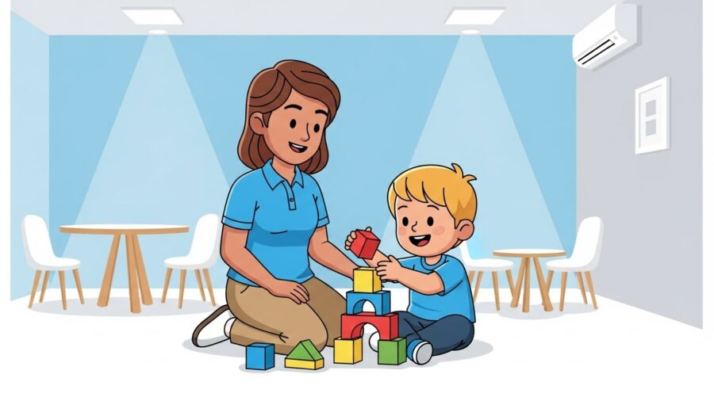
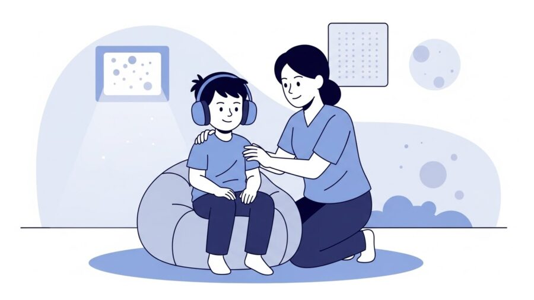
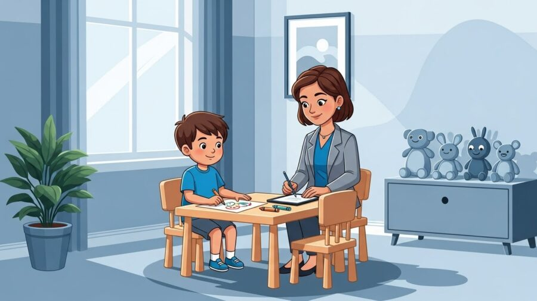
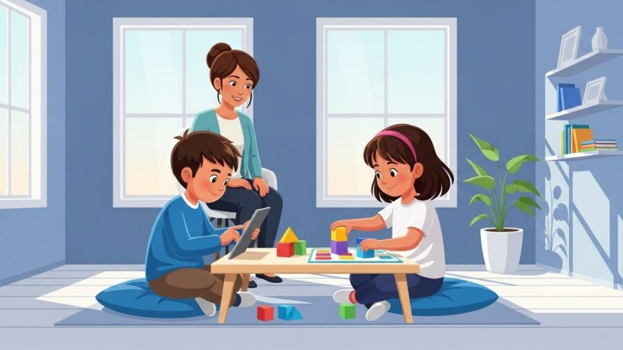
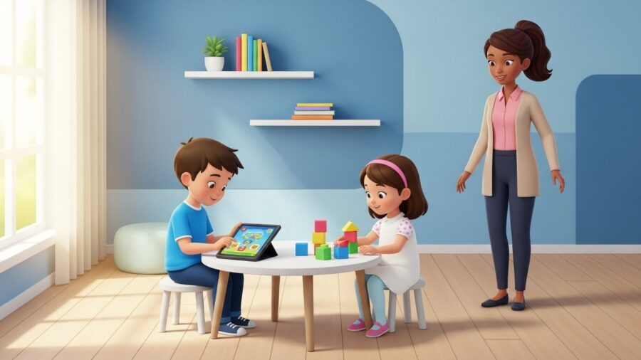

Entendendo o Autismo
Entendendo o Autismo
5 de dezembro de 2025

Nos últimos anos, a busca por informações sobre autismo em Porto Alegre cresceu significativamente. Pais, cuidadores e profissionais procuram compreender melhor os sinais, o diagnóstico, as terapias baseadas em evidências e, principalmente, como garantir um ambiente de desenvolvimento saudável para crianças com TEA.
Este FAQ reúne as perguntas mais pesquisadas no Google e oferece respostas completas, embasadas e contextualizadas à realidade da capital gaúcha, com destaque para o trabalho especializado da HD 360 Moinhos, referência em atendimento terapêutico interdisciplinar.

O Transtorno do Espectro Autista (TEA) é uma condição do neurodesenvolvimento que afeta diferentes áreas do funcionamento infantil, como:
Cada criança apresenta um perfil único.
Algumas têm dificuldades de fala, outras apresentam movimentos repetitivos, e outras têm alta capacidade intelectual, mas enfrentam obstáculos sociais.
É por isso que o TEA é chamado de espectro: existe uma ampla variação de intensidade, características e necessidades de suporte.

Os sinais podem surgir ainda no primeiro ano de vida, mas se tornam mais evidentes entre 18 e 36 meses. Os mais comuns incluem:
Em Porto Alegre, a HD 360 Moinhos recebe diariamente famílias que percebem sinais precoces e buscam avaliação rápida para evitar atrasos maiores no desenvolvimento.

O diagnóstico é clínico e multidisciplinar.
Envolve uma combinação de:
A HD 360 Moinhos conta com equipe especializada composta por psicólogos, terapeutas ABA, fonoaudiólogos, terapeutas ocupacionais e neuropediatras parceiros que utilizam protocolos internacionais para garantir um diagnóstico preciso, ético e responsável.
A literatura científica é unânime: quanto mais cedo, melhor.
A intervenção precoce modifica trajetórias de desenvolvimento e pode reduzir significativamente o impacto dos déficits iniciais.

Idealmente, o tratamento deveria começar entre 18 e 36 meses, mas qualquer idade pode se beneficiar.
Crianças mais velhas também evoluem quando recebem intervenções estruturadas e contínuas.

A ABA (Applied Behavior Analysis) é hoje a abordagem com maior respaldo científico no tratamento do TEA.
Ela se baseia em princípios de análise do comportamento para:
Na HD 360 Moinhos, a ABA é aplicada de forma humanizada, individualizada e baseada em metas mensuráveis, utilizando:
Essa abordagem produz resultados consistentes porque transforma aprendizado em rotina, reforçando comportamentos positivos de forma sistemática.
O autismo não é uma doença, portanto não tem cura.
Ele é uma condição neurológica que acompanha o indivíduo por toda a vida.
Porém, e isso é fundamental, com tratamento adequado, muitas crianças:
A intervenção não busca “curar”, mas potencializar capacidades e promover qualidade de vida.
Sim. Estatísticas mostram que meninos são diagnosticados quatro vezes mais do que meninas.
Entretanto, isso pode estar relacionado a diferenças na manifestação dos sintomas, pois meninas costumam:
Muitas meninas são diagnosticadas tardiamente em Porto Alegre, algo que a equipe da HD 360 Moinhos está preparada para identificar com avaliações específicas.
A classificação não se refere ao “grau” da condição, mas ao nível de suporte necessário:
Precisa de pouco suporte. Tem comunicação funcional, mas dificuldades sociais perceptíveis.
Necessita suporte substancial. Pode ter fala limitada e rigidez comportamental mais evidente.
Requer suporte muito intenso. Pode haver ausência de fala, grande prejuízo adaptativo e sensorial.
A determinação do nível é importante para definir um plano terapêutico adequado.
Porto Alegre possui diversos serviços públicos e privados, mas clínicas especializadas como a HD 360 Moinhos oferecem um modelo integrativo que reúne:
Essa estrutura integrada permite ganhos mais rápidos porque os profissionais trabalham juntos, alinhando objetivos semanais.
Sim, e deve participar.
O tratamento moderno entende que os maiores agentes de generalização são pais e cuidadores.
Por isso, a HD 360 Moinhos oferece:
Quando a família está envolvida, a evolução acontece mais rápido e de forma mais consistente.
A avaliação inicial pode ser agendada diretamente com a HD 360 Moinhos, que disponibiliza horários flexíveis e equipe multidisciplinar qualificada.
O atendimento abrange pacientes particulares e beneficiários da Unimed Porto Alegre, conforme modalidade contratual.
O número de famílias que procuram respostas sobre autismo em Porto Alegre cresce diariamente, e contar com uma equipe especializada faz toda a diferença na evolução da criança.
A HD 360 Moinhos se destaca pela metodologia baseada em evidências, equipe altamente capacitada e modelo de atendimento interdisciplinar capaz de transformar realidades.
Se você busca diagnóstico, tratamento ou orientação profissional, a avaliação inicial é o passo mais seguro e eficaz para iniciar a jornada terapêutica.